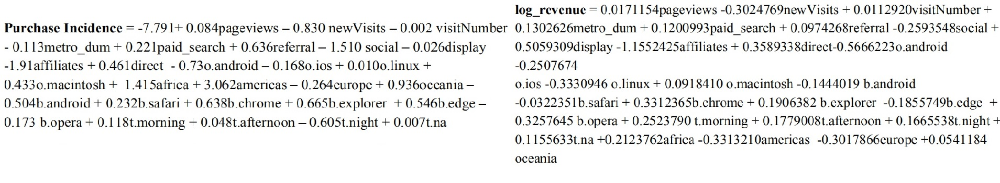

Google Analytics Customer Revenue Prediction
(Using R, MS Excel, Tableau)
The 80/20 rule has proven true for many businesses–only a small percentage of customers produce most of the revenue. As such, marketing teams are challenged to make appropriate investments in promotional strategies.
Click to check out the codes
Click to check out the full report
Introduction
The goal of our analysis was twofold. Our first objective was to identify factors or customer
behaviors that rendered customers more likely to make a purchase.
Our second goal was
developing accurate predictions of transaction revenue based on our findings from the first
objective.
The data was collected from 2016 to 2017, train dataset (903,653 observations and 55 variables) dataset are given in JSON string and test dataset (804,684 observations and 53 variables) is used for revenue predictions.
Thus, we decided to use a logistic regression
model to determine the most important variables in predicting purchase probability. Then followed this model with a semi-log linear regression to predict transaction revenue .
Data Cleaning
The JSON data looks messy so we split the JSON strings into different attributes.
Our team decided which variables could be removed from the dataset given
their level of integrity.
Removing missing values: This was a substantial task in our cleaning process. We
deleted variables if they contained over 90% missing values, including detailed features
of browser, operating system, mobile devices, latitudes, longitudes, and network location,
etc.
Deletion of duplicate session IDs: The session ID should be unique. As a result, we
deleted ~1000 duplicate session IDs in our dataset.
Deletion of records with missing geographical information: We deleted records with
missing values in all geographical information.
Recode into dummy: we keep top 4 or 5 levels, and combine small numbers into level ‘other’, large number of NA set into another level(city, time, etc)
Time conversion: We leveraged Google API to calculate longitudes and latitudes based
on city-level and converted the start time of each session into its local time zone.
Log transformation: Since transaction revenue does not follow the normal distribution,
we did a log transformation on this variable.
The train dataset contains more than half a million observations. To train and evaluate models
efficiently, we randomly took 75% of the dataset as the train dataset, and input the remaining
25% into the validation dataset.
Variable Selection: We had to conduct preliminary variable selection to
determine what would be included.
Removing Multicollinearity: Variables that were highly correlated with each other would
have a negative impact on our models. Therefore, we made decisions on keeping and
removing variables whose VIF exceeds 10, such as hits
Removing insignificant factors: During the modeling process, we removed factors whose
levels don’t have statistical significance, meaning their p-values exceed a 0.05
significance level
Removing factors that contradict domain knowledge: In our model, some factors are
significant, but their explanations of coefficients go against our domain knowledge.
Exploratory Data Analysis
Detailed Tableau Dashboard In the Report
It showed that if a customer is a return customer, it is more likely he or she will generate approximately 35% more revenue compared to new customers.What’s more, in consistent with our analysis before, for channel, if a customer are accessing our website through Display channel, 65% more revenue are stimulated compared to people who are from organic search. Morning is our peak hour here, 29% more revenue comes from people who browse in the morning in contrast to the one who browse in the evening.
One more interesting finding, Mac OS tends to attracts more customer, 9.5% more revenues brought by people who uses mac os compared to people who use chrome os.
Compared with people who lives in other areas, people who are in the metro area developed 13% more revenues for us.
Logistic Regression and Semi-log Linear Regression

Before modeling, we put all variables left into model to check multicollinearity and removed variables with high VIF
Logistic Regression for Purchase Incidence
We concluded the higher the number of pages viewed per session, the higher the
probability of purchase based on the positive coefficient of pageviews. Keeping other
factors constant, when one more page is viewed, the odds of purchase will increase by
8.7%. By contrast, if the visitor is new to the site, his/her probability of purchase will be
notably lower than a return customer, with the odds decreasing by 57.4%.
For the geographic elements, Americas and part regions have strong effects on purchase
incidence. Customers living in metropolitan areas are less likely to make purchases
compared to those who are not, with a 10.6% decrease in odds. Similarly, the continents
are a decided element, the odds of purchase will be 2037 % higher when the location is in
America.
The channel grouping indicates how visitors approach the website. Compared to organic
search, visitors from paid search channels are more likely to have transactions, and the
odds of making a purchase are 24.7% higher. Similarly, referral and direct are more
effective channels compared to organic search, with 88.8% and 58.6% higher in odds
respectively. Conversely, the visitors from affiliate and display channels have lower odds
of purchase, respectively 2.5% and 85.2% lower than if visiting via organic search.
The browsers show traffic of visitors from different devices. Among the types of
browsers, visitors who use Chrome have higher purchase probability. The odds of making
a purchase will be 89.2% higher compared to those who use other kinds of browsers.
Visitors who use Internet Explorer show a similar higher tendency, and the odds will be
94.5% higher.
Time is another influential element. Compared with the evening, at midnight people have
a lower purchase incidence, and the odds of making a purchase will be 45.4% lower.
Linear Regression for Prediction
We concluded that higher pageviews per session resulted in higher transaction revenue.
Keeping other factors constant, if one more page is viewed, the purchase revenue will
increase by 1.7%.
Loyalty Customers have higher transaction revenues. if a customer is returning, it is
likely he or she will generate approximately 35% more revenue compared to new
customers.
The higher visit number of that visiting session, the higher transaction revenue. Keeping
other factors constant, if one increases in visit number, the purchase revenue will increase
by 1.1%.
Morning is the peak hour - 29% more revenue comes from people who browse in the
morning in contrast to those who browse in the evening.
People who live in metropolitan areas tend to purchase more. Compared with people
who live in more rural areas, people who are in the metro area contributed 13% more
revenue.
Conclusion and Recommendations
1. The management team should allocate more resources for referral and display
channels. This may include developing a customer loyalty program or crafting more
engaging emails to boost interest. With regard to the loyalty program, inclusion of special
discounts/credits conditional on the customer making a purchase may further incentivize
them to buy from the retailer.
2. When considering display advertisements, it is highly recommended that management
further invest in making these ads more appealing.
3. Another consideration is the optimization of the retailer’s site for both desktop and
mobile devices. Creating a user-friendly interface is especially important for online
retailers, as the functionality and aesthetic appeal of their site may promote increased
purchases.
Lastly, we recommend that the retailer commit to higher promotion and advertising
during the site’s peak time. Our analysis indicated that morning is peak time for this
retailer, meaning management should run more ads at this time of day to encourage
purchases.
Limitation: After analyzing the findings mentioned above, we believe there is an
opportunity for research on geographical information, keywords, and medium to see
whether they would influence consumer purchase decision and purchase quantity.